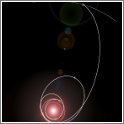
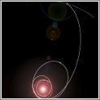

Welcome¶

 


PyKEP is a scientific library providing basic tools for astrodynamics research. Algoritmic efficiency is a main focus of the library, which is written in C++ and exposed to Python using the boost::python library. At the library core is the implementation of an efficient solver for the multiple revolutions Lambert’s problem, objects representing the Sims-Flanagan low-thrust model, efficient keplerian propagators, Taylor-integrators, a SGP4 propagator, TLE and SATCAT support and more, ....
PyKEP has been compiled and installed successfully on different platforms and, since version 1.2, it supports both Python 2.7 and 3.x
PyKEP has been used by the European Space Agency’s Advanced Concepts Team during different Global Trajectory Optimization Competitions GTOC